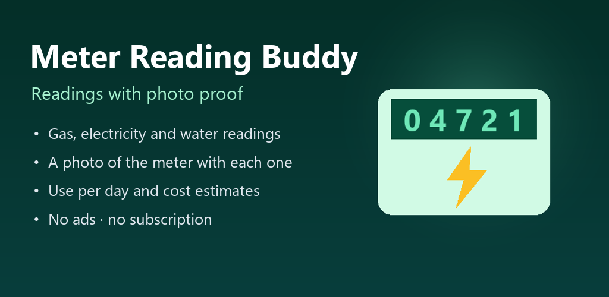
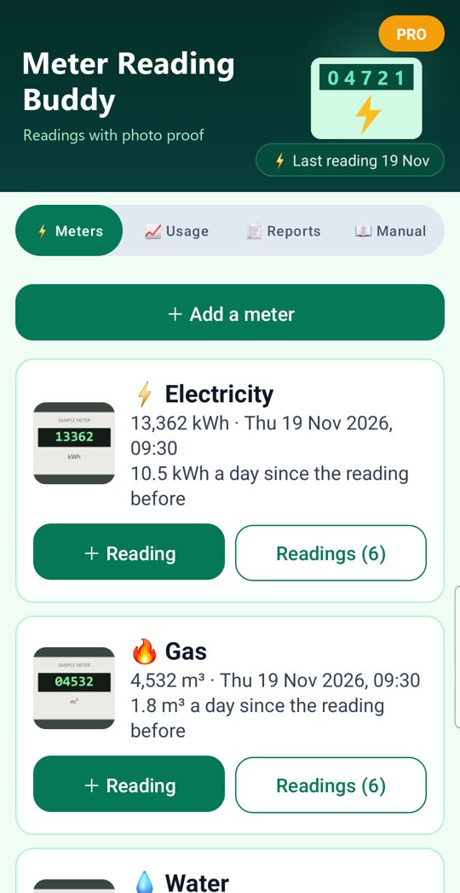
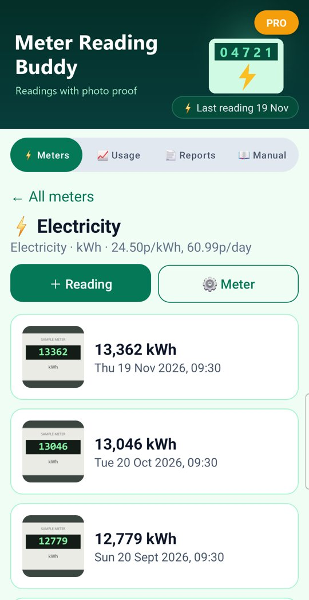
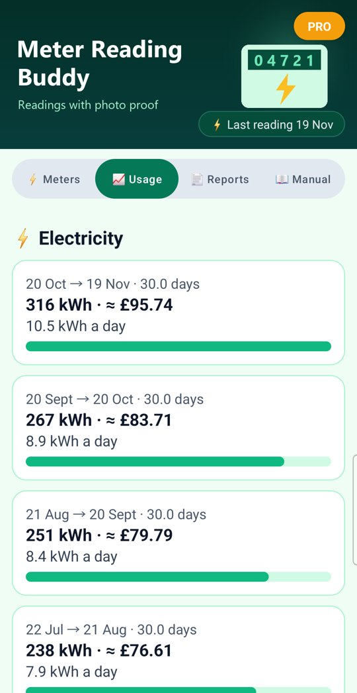
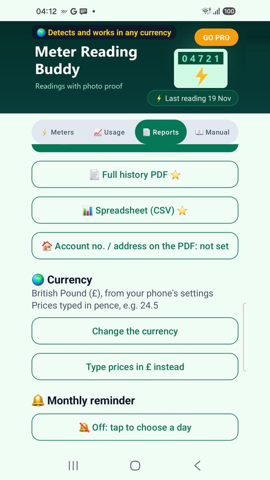

Everything below is the same text as the Manual in the app (📖 Manual tab).
Meter Reading Buddy keeps your meter readings with the date, time and a photo of the meter, works out how much you used between readings, and makes a PDF you can send to your supplier when a bill is estimated or doesn't match your meter.
It doesn't connect to your supplier or a smart meter: the readings are the ones you type in, and the photo shows they are right.
Add each meter once (⚡ Meters › ＋ Add a meter): electricity (kWh), gas (m³, or hundreds of cubic feet on older imperial meters), water (m³) or other.
To rename a meter, set its prices (see 💷 Cost estimates) or delete it with its readings, tap Readings on the meter, then ⚙️ Meter.
Tap ＋ Reading on a meter and type the numbers shown, left to right. Most electricity and gas meters: ignore any red digits or digits after a decimal point. The date and time are taken from the phone.
Then take a photo of the meter (or choose one you already took). The photo is kept with the reading and printed on the PDF, so the supplier can see the meter showed it.
If a reading is lower than the one before, the app asks you to check it: meters don't go backwards (unless yours was replaced). Tap a reading on the meter's screen (Readings on the meter) to see its photo, add or replace the photo, or delete a mistake.
The 📈 Usage tab shows, for each meter, how much was used between each pair of readings, how many days that was, and the use per day. The bar shows each period's use per day, so you can see when you used more.
Enter your unit price (pence per kWh, or per m³ of water) and standing charge (pence per day) from your bill. Each period then shows an estimated cost: units × unit price + days × standing charge.
Gas is priced per kWh, so gas use is turned into kWh the way UK bills do it: m³ × 1.02264 × calorific value ÷ 3.6, with a typical calorific value of 39.5. Your bill shows the exact calorific value, so your bill will differ slightly. Estimates don't include VAT changes, discounts or price changes during a period. A period where the reading went down (a replaced meter) has no estimate.
Add your account number in 📄 Reports to print it at the top.
In 📄 Reports, choose a day of the month: the app reminds you at about 09:00 that day to read your meters. Many suppliers ask for a reading around the same date each month. Android may ask you to allow notifications.
If Android blocks the app's notifications, 📄 Reports shows 🔕 Notifications are blocked: tap it to allow them.
Free: 3 meters, readings with photos, usage per day, the monthly reminder and the latest readings PDF. No ads.
Pro (one payment, no subscription): unlimited meters, cost estimates, the full history PDF and the spreadsheet.
Tap GO PRO at the top. Restore purchase gets Pro back on a new phone with the same Google account.
No account, no sign-in, and no ads. Your meters, readings, photos and account number are kept only in the app's own storage on this phone. Meter Reading Buddy has no servers. A PDF or spreadsheet only leaves the phone when you share it yourself.
Google Play handles the Pro purchase.
Meter Reading Buddy v1.2 (Build 3)
Publisher: AppStack Studio
| Question | Many meter apps | Meter Reading Buddy |
|---|---|---|
| Proof | Just numbers | A photo of the meter with every reading, on the PDF |
| UK gas | m³ only | m³ or imperial cubic feet, turned into kWh the way UK bills do |
| Price | Free with ads or a subscription | Free for 3 meters; Pro is one payment for life (no subscription) |

1. Meters
Each meter's latest reading, its photo and use per day.

2. Readings
Every reading with the date, time and the meter photo.

3. Usage
Use per period and per day, with estimated costs (Pro).

4. Reports
PDF for your supplier, spreadsheet and the monthly reminder.
Screenshots: Meter Reading Buddy 1.0 on a Samsung Galaxy S24, with sample readings and drawn sample meters.